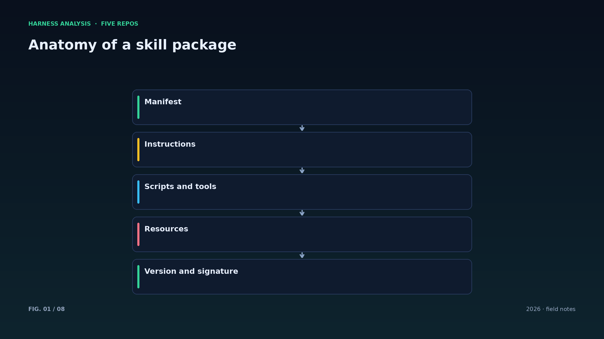
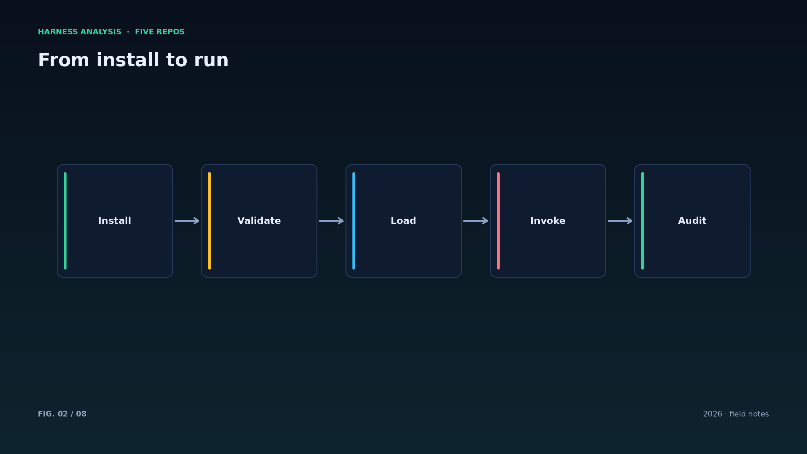
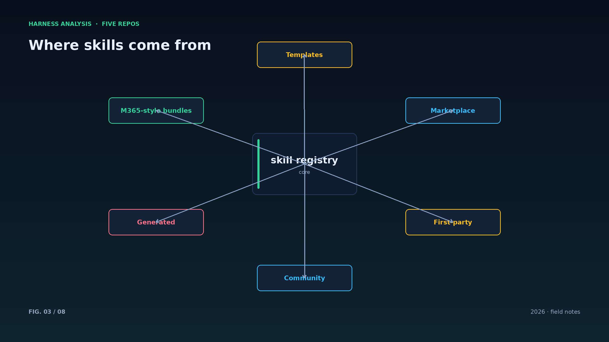
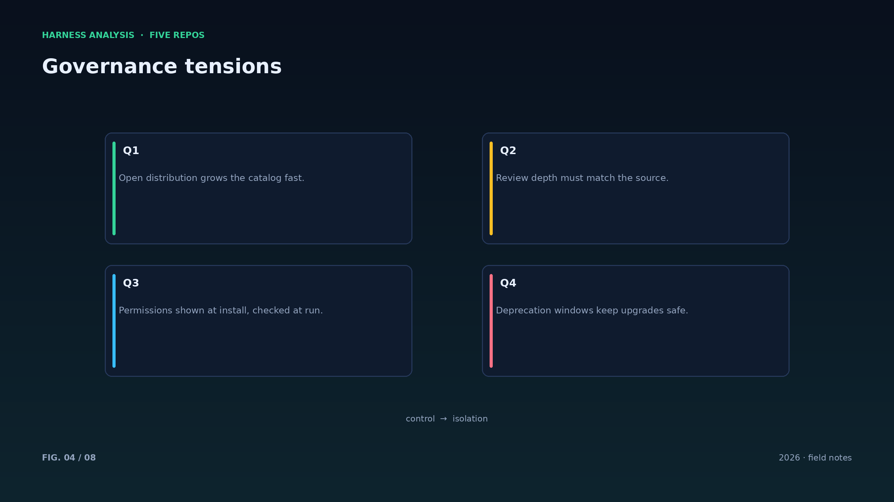
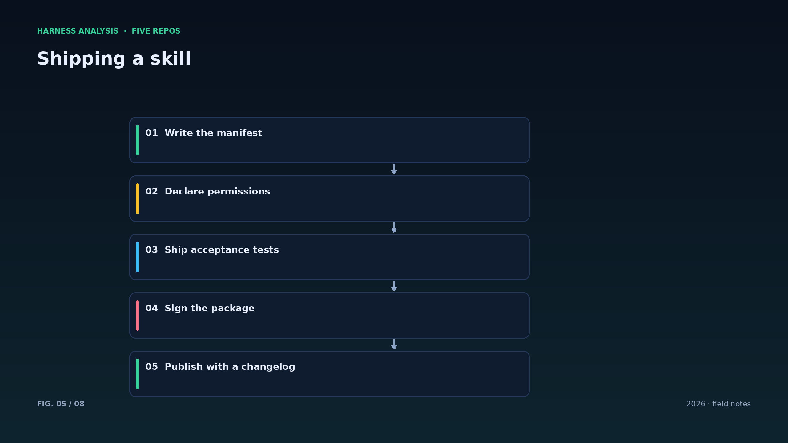
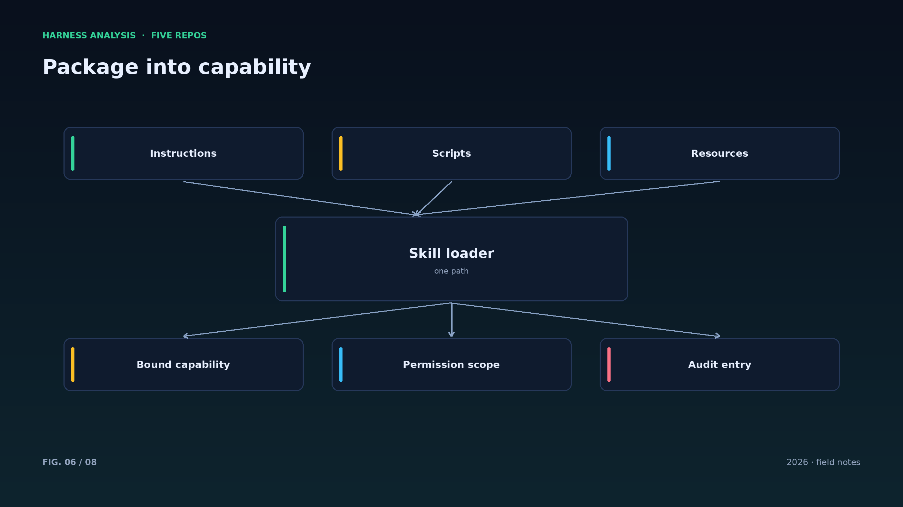
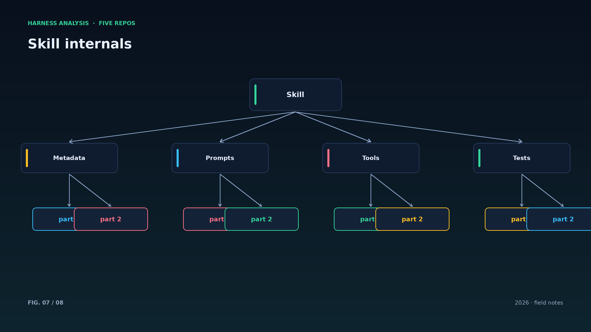
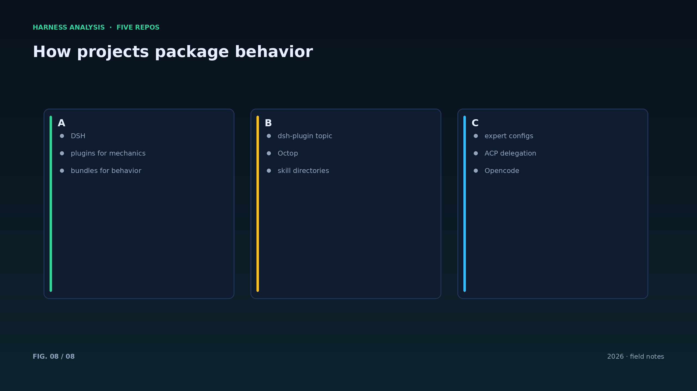

harness analysis · 13
技能包：能力如何被打包、分发与治理
Skill Packages: How Capabilities Are Packaged, Distributed and Governed
从插件到技能包，agent 的能力正在从“写死在代码里”变成“可分发、可版本化的制品”。这一篇讨论技能包的解剖结构、分发链路与治理成本。
所谓技能包，是把一段能力所需的全部东西收进一个可分发单元：清单（名字、版本、兼容性）、指令（给模型的说明与示例）、脚本与工具（真正执行的代码或 API 封装）、资源（模板、知识文件）以及签名。装一个技能包，等于给 harness 增加一种“会做事的方式”。
这和插件不同：插件扩展的是 harness 的机制（模型适配、UI、存储），技能包扩展的是 agent 的行为（会写周报、会做数据核对、会整理会议纪要）。机制要稳定，行为要繁荣——两者的生命周期与治理策略应该分开设计。
分发链路决定信任模型：来自社区市场的技能包和来自内部的技能包，需要的审核强度完全不同。清单里声明所需权限（能读哪些目录、能访问哪些域名），安装时由 harness 展示给用户确认，运行前再由权限引擎二次校验。
治理是最容易被低估的部分：版本要语义化、旧版本要有弃用窗口、签名要能验证、来源要可追溯。一个没有治理的技能市场，很快会变成“谁都不敢装”的荒地。
对照五个项目：DSH 用插件承载能力但边界在机制层；Octop 用技能目录与专家配置组合行为；superagent 把行为打包成 bundle；opencode 用 agent 定义与工具集；Substrate 则把 MCP server 当作可沙箱化的技能载体。技能包的形态不同，治理问题相同。
最后是评测：技能包必须自带验收用例（输入、期望行为、禁止行为），安装前跑一遍，升级时再跑一遍。没有测试的技能包，不配进入生产环境。
Architecture figures








ENGLISH
Skill Packages: How Capabilities Are Packaged, Distributed and Governed
From plugins to skill packages, agent capabilities are shifting from hard-coded logic to distributable, versioned artifacts. This piece examines their anatomy, distribution chain and governance cost.
A skill package gathers everything a capability needs into one distributable unit: a manifest (name, version, compatibility), instructions (guidance and examples for the model), scripts and tools (the code or API wrappers that actually execute), resources (templates, knowledge files) and a signature. Installing one adds a way of doing things to the harness.
This differs from plugins: plugins extend harness mechanics (model adapters, UI, storage), while skill packages extend agent behavior (writing reports, reconciling data, summarizing meetings). Mechanics should be stable; behavior should flourish — their lifecycles and governance deserve separate designs.
The distribution chain defines the trust model: community-marketplace skills and internal skills need very different review depth. The manifest declares required permissions (which directories to read, which domains to reach); the harness shows them at install time and the policy engine re-checks at run time.
Governance is the most underrated part: semantic versions, deprecation windows, verifiable signatures, traceable provenance. A skill marketplace without governance quickly becomes a wasteland nobody dares to install from.
Across the five projects: DSH carries capability through plugins but keeps boundaries at the mechanics layer; Octop composes behavior from skill directories and expert configuration; superagent ships behavior as bundles; opencode defines agents with tool sets; Substrate treats MCP servers as sandboxable skill carriers. The shapes differ; the governance questions do not.
Finally, evaluation: a skill package must ship acceptance cases (inputs, expected behavior, forbidden behavior), run before install and again on upgrade. A skill without tests does not belong in production.